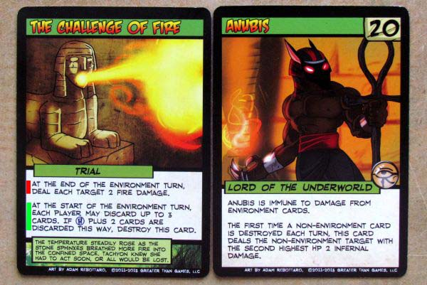

25 posts · 2837 views · started 2013-12-29 11:44 UTC
DE
deeminllama
2013-12-29 11:44 UTC
#1
Good day
I could not find a general suggestions post so if this is in the incorrect place please just move it or add it to where it needs to be.
1. At start and end of turn markers
A lot of people complain about the 'fiddlyness' of the game. I have no problem with this. If you go through the motions each round then there is nothing to worry about. What would, in my mind, make the game easier however is the following: Get a marker for "at the start" and "end of turn" effects. See attached for an example - The Challenge of Fire. (It is a picture I got somewhere online and quickly edited with photoshop). Yes, you do eventually memorize a lot of the cards and it becomes easier. But something like this would save a lot of reading or memorizing and thus make the game easier to manage. One can, at a quick glance, see which cards need to kick in now or later. One can, at a quick glance, see which cards needs to be skipped at these two points in the game. Thus you don't unnecissarily read these cards or texts again.
2. More Merchandising
I love the idea behind the large villian cards and as soon as I can afford them I will get them.
I also love Summoner Wars though. They have a great idea: You can buy faction specific die if you like a specific faction - see for example http://www.plaidhatgames.com/store/33.
I was thinking that >Games could do the same? Create 30 or 40 sided die to use as indicators for the hero's life? And do it in that hero's colour scheme? A 40 sided Red and White die for Legacy as example. The same can be done for the villians? I use miniature 6 sided die to keep track of HP instead of the tokens. Each villian with his own specific bag of 5 or 6 or 7 etc. sided die for his minions could also work.
You can combine the die with a pack of hero/villian specific tokens instead of the generic ones. Along with Legacy's die you could perhaps get tokens that are specific to his deck and printed in his colour scheme and icon. Or specific tokens? For example a token for his "Take Down" card. Yes, it is silly and it will only be used for one turn but it is a token that says "Take Down!" on it that you (as Legacy) can throw on the oversized villian card for all to see - and effect.
One step further removed would be: figurines. Instead of just having the card on the table you can plant down a figurine of Legace for this game. Or perhaps one of Grand Warlord Voss' flagship?
Just some thoughts.
Regards.

PY
Pydro
2013-12-29 14:01 UTC
#2
First, welcome to the forums!
Regarding #1: GtG has come out with the start and end of turns tokens to help the game. However, they have also have carefully considered putting something directly on the cards, but decided against it.
Regarding the merchandising, I agree though I'm not sure of the economics of it. I'm amazed that >G can sell Mr. Chomps at a profit for only $20. In the grand scheme of things, we have to be one of the smallest customer bases out there, and there can't be much money in it. I'm not sure what other kinds of merchandising they can do that would be worth the effort for how much return they'd see.
On a related note, I feel bad for the people who had to labor to create my Mr. Chomps for pennies a day so that my daughter could squeal with joy over it on Christmas day. Thanks, whoever you are!
DE
deeminllama
2014-01-01 19:06 UTC
#4
Good day
I do fully understand their argument with the keywording or using iconography. I also do prefer that they did not use either as the keywording annoys me a lot in MTG. I like that everything is on the card itself in SOTM. My suggestion was to not remove any wording, nor use keywording, nor to use only icons. I think I feel very much like jagarciao in his response:
"I went ahead and highlighted phrases "the start of turn" (green) and "end of turn" (red) on the cards themselves so I don't have to use the tokens."
That is very much what I had in mind with my green and red - as on the attachment. But yes, I could not bring myself to highlighting my cards :)
The tokens in my mind are a good idea but ads more admin to the game. Whilst the green and red marks printed on the cards themselves give exactly the same effect with none of the hassle.
Yes, I know you guys have a small customer base. I also do not know the cost involved in making these items available. Thus the idea though that they are done on a per order basis. They are available on the website to order for those who want them.
We can steal the figurines from Tactics then ;)
Love the game. I do hope they keep on working on it.
Regards
JA
jagarciao
2014-01-01 20:14 UTC
#5
Writing on your cards is an extremely liberating experience.
I'm not even joking.
What was really frustrating though, was coming across the occasional cards I missed when highlighting and not having a sharpie handy.
RE
Reckless
2014-01-01 23:43 UTC
#6
If your argument is for an "upon request" method of these marks on the cards, I can understand that perspective. That being said, I play with a gamer that is red/green colorblind, and the tokens help by combining both color and text. In that respect, I find the colored tokens to be far superior to merely using color.
SI
Silverleaf
2014-01-02 07:12 UTC
#7
We've discussed this at length before, but my argument was for green SV, SH and SE and red EV, EH and EE icons using those letters. That works for both colour-blind and non-colour-blind players and even players with no colour vision at all, especially if you're careful about contrast - e.g. bright lime green with black background, and darker red on white. And the colour cues are there for those of us who work best with colour and are in the habit of colour-coding pretty much everything... ;)
I'd also use a "special" icon such as an asterisk for any action/effect that happens at any other time (as opposed to static effects like, say, Ta Moko), or triggers as a response to something else. Just a little reminder to keep checking that card.
DA
danmarshall14
2014-01-02 15:01 UTC
#8
We're a small consumer base, yes, but we are dedicated and crazy about our Sentinels. Looking at the SotM Store this December, you probably noticed that most everything was out of stock within weeks. That's pretty impressive. And looking back to all the Kickstarters we've fully funded? When it comes to hobbies, people are willing to spend their money when it makes them happy and they think it's worth it (I know I am; I purchased the RC/IR combined expansion despite already owning RC and IR, though mostly because my RC cards are getting worn out)
Plus, overhead costs and production costs tend to go down the longer a company is in business as they smooth out their shipping/manufacturing/packaging process. Obviously I can't speak with any authority, but I'm fairly sure it's costing them less to print, package, and ship cards today than it was a few years ago.
PA
Paul
2014-01-02 16:36 UTC
#9
I'm fairly sure it's costing them less to print, package, and ship cards today than it was a few years ago.
Thanks to economies of scale, that is definitely true! Because you guys (and all of our other fans) are awesome and enjoy buying our stuff, we have had the luxury of investing in some equipment and space that certainly speeds up the shipping process while lowering the cost per shipment. We still occationally have shipping related issues, but have definitely been able to increase our efficiency, which is a process that is still ongoing. This big December promotion definitely showed us some more areas that could use improvement, which will help when it comes time to ship Vengeance, GSF, and other big shippments.
Regarding Mr. Chomps and other merchandize, we are still in the experimental phase; we know that t-shirts sell just well enough to be occationally worthwhile. We suspected (correctly, so far) that a Mr. Chomps plush toy would sell at least a bit better, and so far we've been right. Our margin on Mr. Chomps is quite low right now (so we can't sell them to brick and mortar stores very easily), but we will definitely be bringing a cuddly pile to every game convention we're at this year!
Also, OMG you guys, the Sentinel Tactics minis are going to look *amazing*!
DA
danmarshall14
2014-01-02 17:02 UTC
#10
Words cannot describe how pumped I am for those.
JA
jagarciao
2014-01-02 17:33 UTC
#11
I need to start clearing out some shelf space for all the upcoming stuff. Board gaming is starting to take over my room... my other hobbies are getting pissed...
MC
McBehrer
2014-01-02 17:47 UTC
#12
Can you tell us, if not which heroes, then how many heroes are going to be playable in Tactics? I NEED TO KNOW
AR
arenson9
2014-01-02 17:52 UTC
#13
Mr. Chomps!
What sort of deal is The Broker trying to talk Mr. Chomps in to?
SP
Spiff
2014-01-02 18:19 UTC
#14
My daughter and I have contemplated what other in-game item should be turned into a plushie for her to love. She wouldn't love a replica of Fanatic's sword, or a Mobile Defense Platform for her desk, or anything like that. But she would love a plushie Bee Bot within an inch of its life (which is important, since if you love them too hard, they might explode and take out an Ongoing card).
CR
Craig
2014-01-02 18:33 UTC
#15
Wraith's hairdryer springs to mind. The fish on Aquatic Correspondence, whom I have named Ted.
And, of course, who doesn't want voodoo dolls from GloomWeaver, complete with various coloured pins.
AM
Ameena
2014-01-02 19:10 UTC
#16
Lol good idea, a plushie hairdryer...the Imbued Vitality version, with little eyes on it :D.
AR
arenson9
2014-01-02 20:02 UTC
#17
A hearty second for this idea.
PY
Pydro
2014-01-02 20:19 UTC
#18
Only if it also talks.
FO
Foote
2014-01-02 20:33 UTC
#19
Are you working again with the same folks who did the minis for GSF?
PA
Paul
2014-01-02 23:53 UTC
#20
Are you working again with the same folks who did the minis for GSF?
Actually, entirely different people! The Tactics minis are being sculpted in clay, whereas the GSF minis were rendered as a 3d mesh on a computer.
SI
Silverleaf
2014-01-03 06:36 UTC
#21
Tell me it's polymer clay so I can have a double-geek moment!
FO
Foote
2014-01-03 16:21 UTC
#22
Why the change? (I understand if you do not feel the need to answer that haha. Business and whatnot). Sculpting in clay first I would guess would yeild much more detailed minis than sculpting on the computer, but thats admittedly based on ignorance of the proccess. Very keen on seeing some progress pics once some sculpts are close to being finalized!
PA
Paul
2014-01-04 00:06 UTC
#23
@Foote
It has to do with the desired asethetic of the miniatures. For GSF, we want space ships with a very technological/cgi look. Even the space animals fit into this aesthetic. By contrast, we want the Tactics minis to capture the comic book aesthetic of the card game, and we feel that hand-sculpted minis will work best for that.